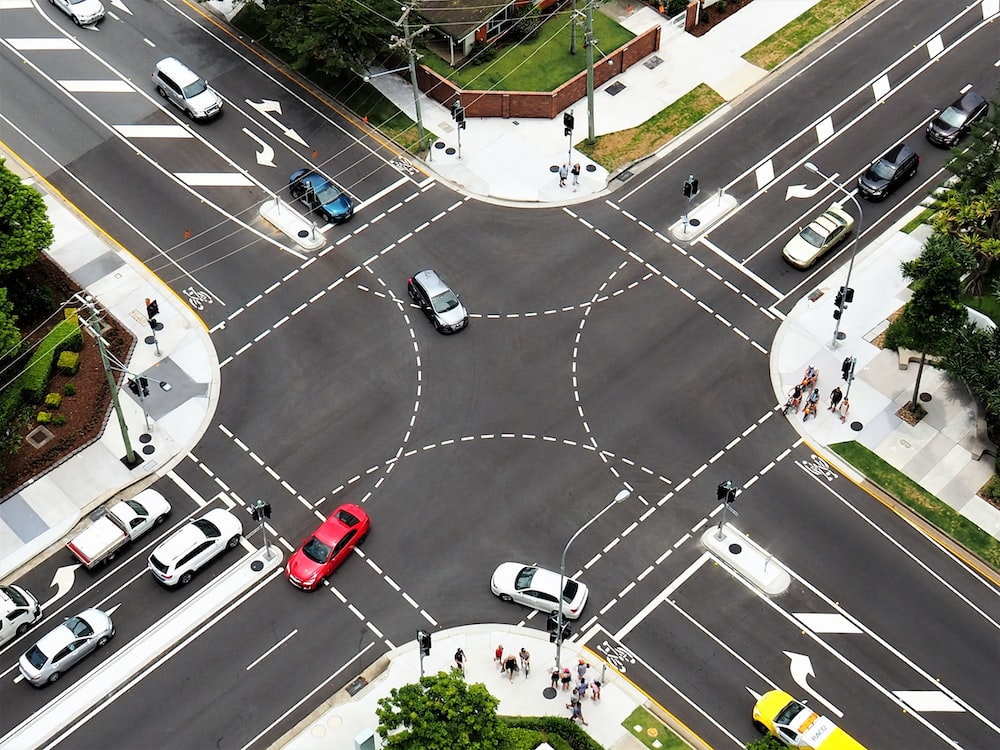

One of my first big projects our group was tasked with was the adaption of a car traffic simulator. We were given a basic
layout of the traffic intersection and had to make sure there were no crashes in the intersection just like in real life.
This project took a lot of hard work and dedication that showed when we did finally execute and run our final result.
A snapshot of the result is above.

I appreciate this project because it gave me a deeper meaning behind such a non-trivial idea.
I said to myself that if an intersection has so many extremities and variables then I can only
begin to imagine the circumstances of harder and more complicated problems. This moment was the spark
of my passion and chase of Computer Science.
To download the files and run them yourself, checkout my Github

Check out my Linkedin